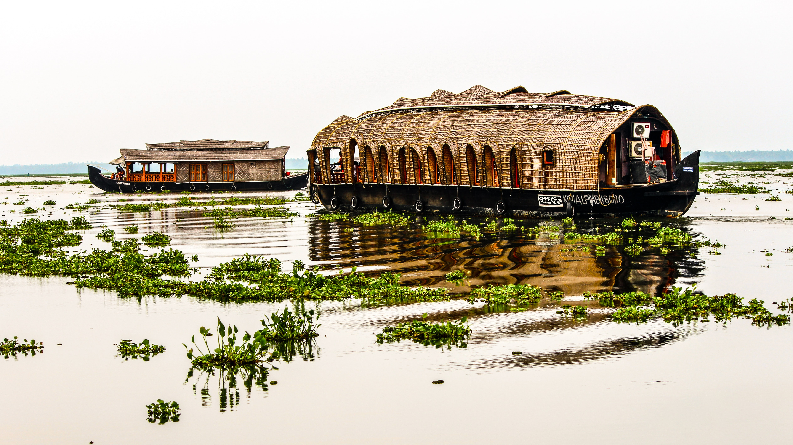

Kerala, located on the south-western tip of India, enjoys unique geographical features that have made it one of the most sought-after tourist destinations in Asia. Fondly referred to as ‘God’s Own Country’, Kerala was selected by the National Geographic Traveller as one of the 50 destinations of a lifetime and one of the thirteen paradises in the world. Classical art forms, colourful festivals, exotic cuisine are some of the cultural marvels that await travellers. Ayurveda, the ancient Indian system of medicine and Panchakarma, the rejuvenation therapy in Ayurveda have also helped Kerala to gain a pan-global reputation as a worth-visit destination. Season never ends in Kerala, thanks to the year-long moderate climate and numerous festivals and events.